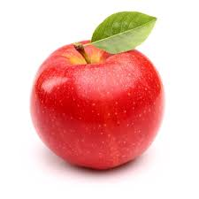
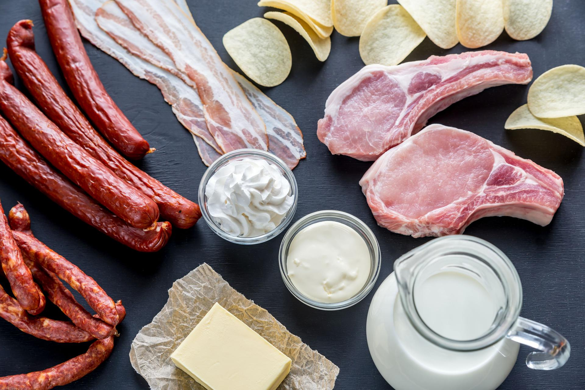

4.1 Organiczne składniki pokarmowe
Głównym celem odżywiania się jest dostarczanie organizmowi związków,
które posłużą do jego budowy i zapewnią mu energię potrzebną do życia. Dlatego spożywamy przez nas pokarm powinien
zawierać wszystkie niezbędne składniki organiczne i nieorganiczne. Do najważniejszych składników organicznych należą:
cukry, białka i tłuszcze.
stopCukry - główne zródło energii
Cukry (węglowodany) to związki, których podstawową funkcją jest dostarczanie organizmowi energii.
Dzięki temu umożliwiają zachodzenie w organizmie takich procesów, jak przewodzenie impulsów nerwowych,
transport substancji czy skurcze mięsni.
Jednak nie wszystkie cukry pełnia funkcję energetyczną. Dlatego cukry dzielimy na:
play_arrow
węglowodany przyswajalne, będące zródłem energii - należą do nich cukry proste
oraz cukry, które mogą być rozłożone przez enzymy do cukrów prostych. Są one wchłaniane w jelicie cienkim i
transportowane do komórek;
play_arrow
węglowodany nieprzyswajalne, które nie są zródłem energii - to węglowodany,
których nasz organizm nie potrafi rozłożyć do cukrów prostych, ponieważ nie ma odpowiednich enzymów.
Wchodzą one w skład błonnika pokarmowego.
Oprócz funkcji energetycznej cukry pełnią również funkcję zapasową (glikogen).
Rodzaje węglowodanów przyswajalnych
Cukry proste (monosacharydy) - należą do nich np. glukoza, fruktoza i galaktoza.
Ich zródłem są głównie owoce, słodycze i miód. Po zjedzeniu tych produktów bardzo szybko w organizmie uwalniają
się duże ilości glukozy.

Dwucukry (disacharydy) - to cukry złożone z dwóch cukrów prostych, np. sacharoza
, laktoza (cukier mleczny) i maltoza. Występują główne w słodyczach i nabiale. Są szybko rozkładane do cukrów
prostych, dlatego dostarczają szybko energii, ale na krótki czas.
Wielocukry (polisacharydy) - to cukry złożone z wielu cząsteczek cukrów prostych
, np. skrobia. Znajdują się m.in. w produktach zbożowych, kaszach i makaronach. Glukoza jest z nich uwalniana
powoli, dlatego stanowią zródło energii na dłuższy czas.
stopBiałka - główny budulec organizmu
Białka są najważniejszym elementem budującym komórki i tkanki.
Do białek pełniących funkcje budulcową należą np.: kolagen, który
jest składnikiem tkanek łącznych, miozyna i aktyna, tworzące tkankę mięśniową, oraz keratyna, z której są
zbudowane nasze włosy i paznokcie.
Inną funkcją białek jest regulowanie przebiegu procesów
zachodzących w organizmie. Przykładowo hormony przekazują informacje między komórkami, a enzymy przyspieszają
przebieg reakcji biochemicznych. Białka transportują też substancje (m.in. hemoglobina, która transportuje tlen i
dwutlenek węgla).
Białka są zbudowane z 20 rodzajów aminokwasów. Większość z nich nasz organizm potrafi sam
syntetyzować i nie musi ich przyjmować z pokarmem. Aminokwasy te nazywamy
aminokwasami endogennymi.
Pozostałe aminokwasy, których organizm nie potrafi wytwarzać i które musi przyjmować
z pokarmem, to aminokwasy egzogenne. Ze względu na skład aminokwasów i Ich
proporcje wyróżniamy: białka pełnowartościowe i
białka niepełnowartościowe. Ich charakterystykę przedstawiliśmy na poniższym
schemacie.
Podział białek ze względu na skład i proporcje aminokwasów
Rodzaje białek
białka
pełnowartościowe
pełnowartościowe
fiber_manual_record
Zawierają wszystkie aminokwasy egzogenne w odpowiednich proporcjach.
fiber_manual_record
Zródło: pokarm pochodzenia zwierzęcego (jaja, produkty mleczne, mięso).
białka
niepełnowartościowe
niepełnowartościowe
fiber_manual_record
Nie zawierają wszystkich aminokwasów egzogennych lub mają ich zbyt mało.
fiber_manual_record
Zródło: pokarm pochodzenia roślinnego (warzywa i owoce).
Jak łączyć pokarmy roślinne?
Chociaż poszczególne pokarmy roślinne zawierają
białka niepełnowartościowe, to jeżeli połączymy je ze sobą, możemy dostarczyć organizmowi wszystkich niezbędnych
aminokwasów. Na przykład pełen zestaw aminokwasów daje połączenie ryżu z fasolą po meksylańsku czy pełnoziarnistej
pszennej bułki z sezamem i masłem orzechowym.
stopTłuszcze - materiał zapasowy
Tłuszcze to przede wszystkim materiał zapasowy dostarczający energii
, gdy zabraknie cukrów.
Mogą pełnić tę funkcję m.in. dzięki temu, że są lekkie w stosunku
do dużej objętości, a ich rozkład dostarcza dwa razy więcej energii niż rozkład cukrów.
Dodatkowo tłuszcze m.in.:
play_arrow
pełnią funkcję termoizolacyjną i ochronną - wchodzą w skład tkanki podskórnej oraz tkanki tłuszczowej,
play_arrow
są nośnikami i magazynem witamin rozpuszczalnych w tłuszczach,
play_arrow
budują błony komórkowe,
play_arrow
są niezbędne do syntezy niektórych hormonów.
Tłuszcze wchodzące w skład pokarmu są zbudowane najczęściej z glicerolu i kwasów tłuszczowych. Kwasy tłuszczowe
dzielimy na nasycone i nienasycone. Kwasy tłuszczowe
nasycone mają pojedyncze wiązania między atomami węgla, a kwasy tłuszczowe nienasycone mają co najmniej jedno
wiązanie podwójne. Dla naszego zdrowia niezwykle ważne jest uwzględnianie w diecie
niezbędnych nienasyconych kwasów tłuszczowych (NNKT),
ponieważ nie są one syntetyzowane w organizmie. Najlepszym zródłem NNKT są ryby morskie i oleje roślinne.
Właściwy poziom NNKT wpływa m.in. na prawidłowy poziom cholesterolu we krwi, reguluje ciśnienie krwi i pracę serca.

Zródłem nasyconych kwasów tłuszczowych są produkty zwierzęce, np. boczek, wędliny i śmietana.
Zródłem nasyconych kwasów tłuszczowych są produkty zwierzęce, np. boczek, wędliny i śmietana.

Zródłem nienasyconych kwasów tłuszczowych są tłuszcze roślinne, zwłaszcza olej rzepakowy.
stopZapotrzebowanie organizmu na składniki pokarmowe
Aby organizm funkcjonował prawidłowo, powinniśmy dostarczać mu wszystkich związków organicznych w odpowiedniej ilości.
Niedobór cukrów może spowodować spadek poziomu glukozy we krwi, co zmniejsza koncentrację i wywołuje senność. gdy
jest on długptrwały, jako zródło energii są wykorzystywane tłuszcze lub nawet białka. Może to prowadzić
do wychudzenia organizmu. Z kolei nadmiar cukrów powoduje przekształcanie ich w wątrobie w tłuszcze i magazynowanie
w postaci tkanki tłuszczowej. Może to prowadzić do otyłości.
Niedobór białek hamuje wzrost i rozwój, a nadmiar może prowadzić do uszkodzenia nerek.
Nadmiar tłuszczów przyczynia się do rozwoju chorób układu krążenia i powstawania otyłości. W przypadku zbyt
małej ilości tłuszczów istnieje ryzyko
niedoboru NNKT czy witamin rozpuszczalnych w tłuszczach.
stopBłonnik wymiata pokarm

Błonnik wymiata pokarm!
Błonnik pokarmowy, bazywamy inaczej włókniem pokarmowym, to związki,
których nasz organizm nie potrafi strawić. Najczęściej są to elementy budujące ściany komórek roślinnych,
głównie wielocukry takie jak: celuloza, hemicelulozy i pektyny. Błonnik nie dostarcza prawie wcale substancji
odżywczych (ma niską kaloryczność), a większość tworzących go związków jest nieprzyswajalna.
Jego znaczenie dla naszego zdrowia jest jednak ogromne.
Z jakiego powodu?
Z jakiego powodu?
Błonnik:
fiber_manual_record
wzmaga ruchy jelit co przyspiesza wędrówkę pokarmu przez przewód pokarmowy i zapobiega zaparciom,
fiber_manual_record
chłonie duże ilości wody i pęcznieje, co zapewnia uczucie sytości,
fiber_manual_record
spowalnia trawienie wielocukrów, a przez to ułatwia utrzymanie odpowiednego
stężenia glukozywe krwi,
fiber_manual_record
wspomaga rozwój bakteryjnej flory jelitowej,
fiber_manual_record
przyczynia się do obniżenia stężenia cholesterolu,
fiber_manual_record
wiąże jony sodu, co wpływa na obniżenie ciśnienia krwi,
fiber_manual_record
zmniejsza ryzyko rozwoju nowotworów układu pokarmowego, np. raka żołądka i raka jelita grubego.
Błonnik pokarmowy jest niezbędnym elementem prawidłowej diety. Zalecanie dzienne spożycie błonnika
dla młodżieży wynosi ok. 20g na dobę. Należy jednak pamiętać, że nadmiar błonnika może działać niekorzystnie,
np. powodować wzdęcia lub biegunki.
Dobrymi zródłami błonnika są warzywa, owoce, orzechy, kasze, płatki owsiane, pełnoziarnista mąka
(razowa) i produkty z niej wytwarzane;
Zawartość błonnika pokarmowego w wybranych produktach
(g/100g części jadalnych)
(g/100g części jadalnych)
| Produkt | Zawartość błonnika |
|---|---|
| Migdały | 12.9 |
| Morele suszone | 10.3 |
| Płatki jęczmienne | 9.6 |
| Śliwki suszone | 9.4 |
| Orzechy laskowe | 8.9 |
| Pieczywo żytne razowe | 8.4 |
| Płatki owsiane | 6.9 |
| Truskawki | 1.8 |
| Śliwki | 1.6 |
| Sok marchwiowy | 1.3 |
Otręby, czyli zewnętrzne części nasion, są cennym zródłem nie tylko
błonnika, lecz także witamin z grupy B i dużej ilości pierwiastków ważnych dla naszego organizmu.
stopOmega-3 czy omega-6?
Omega-3 czy omega-6?
Bliżej życia
W mediach często pojawia się informacja, że powinniśmy koniecznie spożywać kwasy omega-3 i omega-6.
Czy rzeczywiście tak bardzo ich potrzebujemy?
Kwasy omega-3 i omega-6 należą do NNKT.
Mają one podwójne wiązanie przy trzecim (omega-3) lub przy szóstym (omega-6) atomie węgla w
cząsteczce kwasu tłuszczowego,
gdy liczymy od jego końca.
Duże ilości kwasów omega-6 występują w olejusłonikowym, fistaczkach,
awokado i pestkach dyni, natomiast zródłem kwasów omega-3 są np. ryby morskie oraz olej rzepakowy.
Oba kwasy są namm potrzebne, ale by zachować zdrowie, musimy pamiętać, że stosunek ilości kwasów omega-6
do omega-3 powinien wynosić ok. 5:1.
Tymczasem często spożywamy zbyt dużo
kwasów omega-6, przez co stosunek ten wynosi nawet 20:1. Dlatego zaleca się,
aby co najmniej dwa razy w tygodniu spożywać ryby morskie.